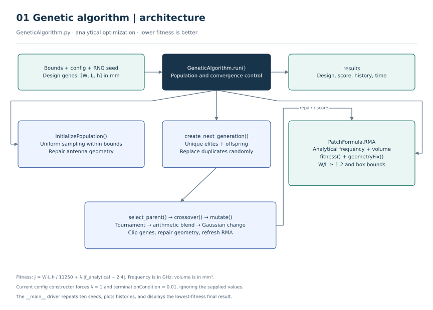
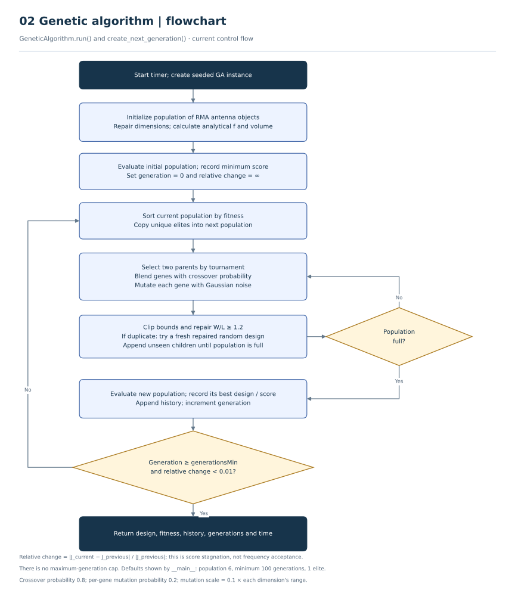
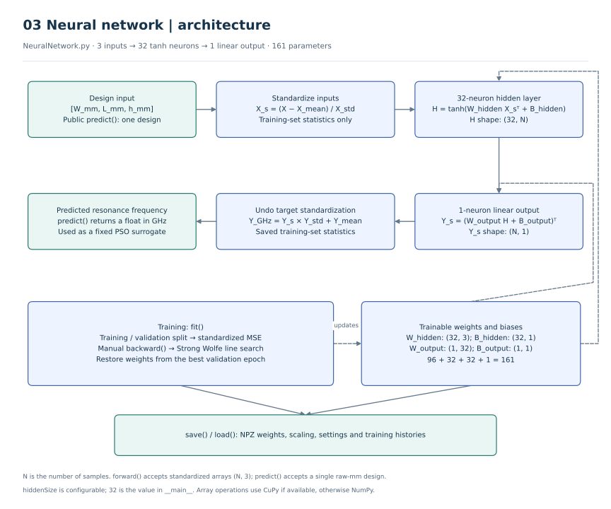
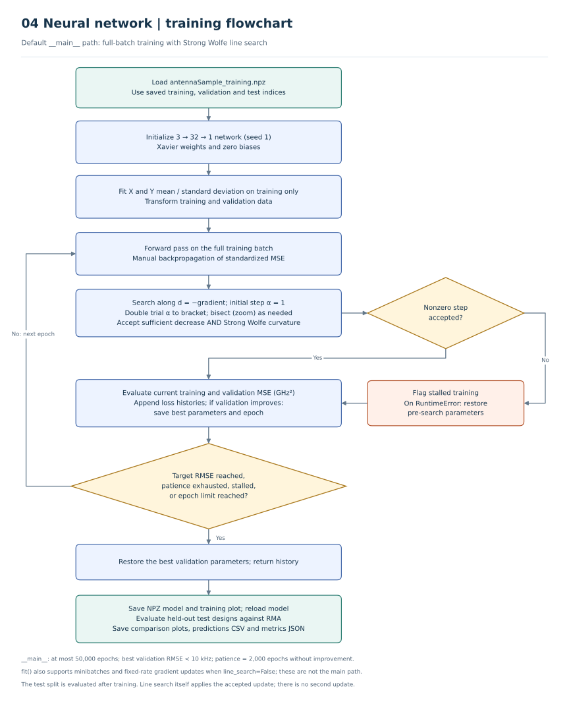
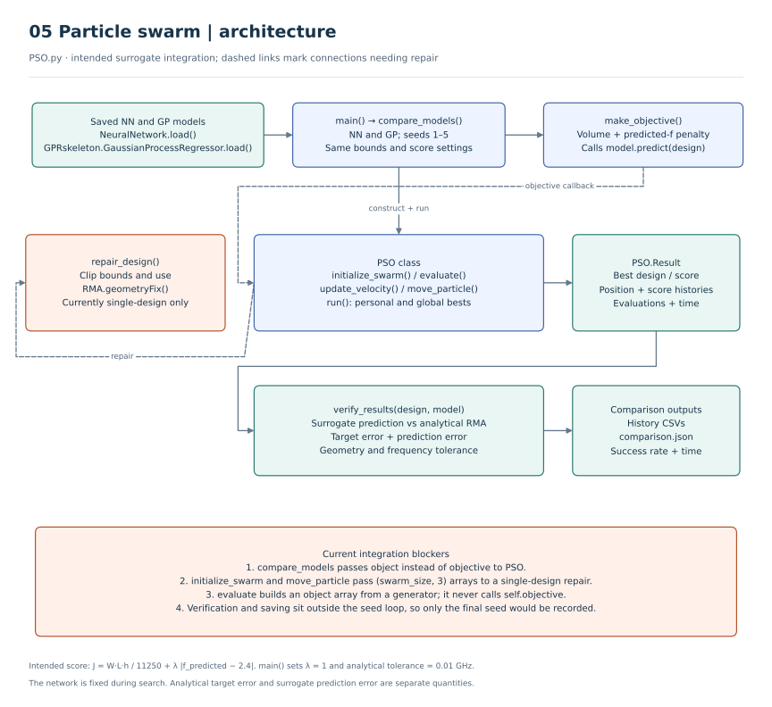
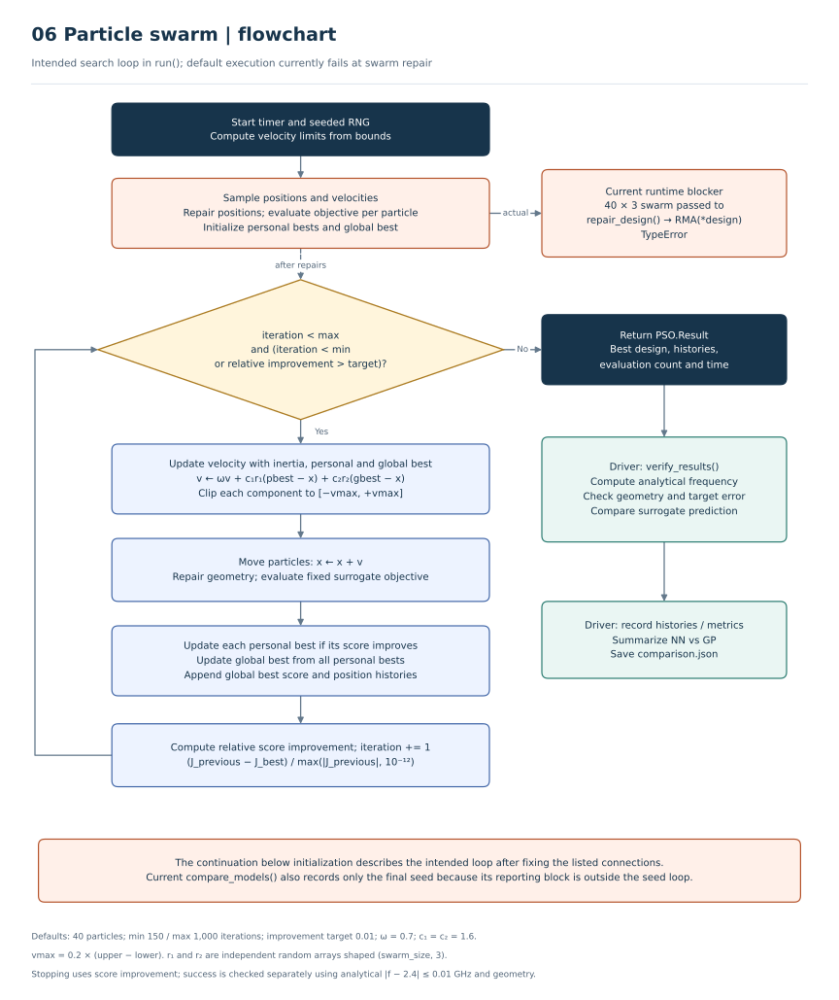

01 Genetic algorithm | architecture
SVG · PNG · Editable Mermaid



EE5606 · RECTANGULAR MICROSTRIP PATCH ANTENNA · SOURCE SNAPSHOT 18 NOV 2026
Six diagrams explain the current GA, neural network and PSO files. Architecture diagrams show components and data; flowcharts show execution order, decisions and loops. Use SVG for scalable report/slide graphics, PNG for easy insertion, or edit the Mermaid (.mmd) sources in a Mermaid-compatible editor. This gallery works offline.
All design vectors use [W_mm, L_mm, h_mm]. Bounds are W = 25–50 mm, L = 25–45 mm,
h = 1–5 mm, with W/L ≥ 1.2. Frequencies are in GHz; the target is 2.4 GHz.
Direct analytical optimization
SVG · PNG · Editable Mermaid

SVG · PNG · Editable Mermaid

Frequency surrogate: architecture and training
SVG · PNG · Editable Mermaid

SVG · PNG · Editable Mermaid

Surrogate optimization: intended workflow and current blockers
SVG · PNG · Editable Mermaid

SVG · PNG · Editable Mermaid

| Source location | What the diagrams reflect |
|---|---|
| GeneticAlgorithm.py:44–45 | The config constructor assigns terminationCondition = 0.01 and frequencyPenalty = 1 regardless of its arguments. The driver's requested penalty 10000 is therefore not applied. |
| GeneticAlgorithm.py:169–179 | Stopping checks the change between consecutive population-best scores after the minimum generation count. There is no maximum-generation cap or frequency-feasibility stopping check. |
| NeuralNetwork.py:67–98, 271–275 | The class accepts a configurable hidden width; the driver uses 32. Public predict() takes one design in millimetres, applies saved scaling, then returns one frequency in GHz. |
| NeuralNetwork.py:129–152, 225–241 | Strong Wolfe search evaluates trial weights along the negative gradient and leaves the accepted parameters in place. Do not add a second gradient update on this path. A RuntimeError restores the pre-search parameters and flags training as stalled; other exceptions propagate. |
| NeuralNetwork.py:243–269 | Training records losses in GHz² and returns the parameters from the best validation epoch. The test split is used only for evaluation after training. |
| PSO.py:65–74, 85–86 | initialize_swarm() passes a (40, 3) array to a repair function expecting one (3,) design. A focused check reproduced TypeError at RMA(*design). move_particle() uses the same non-batched repair callback. evaluate() returns a zero-dimensional object array containing a generator rather than numeric scores; it never calls self.objective. |
| PSO.py:225 | The optimizer receives Python's built-in object rather than the objective closure created by make_objective(). The dashed objective link marks the intended connection. |
| PSO.py:231–292 | Verification, run recording and history saving are outside the inner seed loop. After other blockers are fixed, this placement would retain only the final seed for each model, not all five runs. |
Score versus success. Both score formulas are V/11250 + λ|f − 2.4|. GA uses analytical f; the PSO objective is designed to use a frozen surrogate's f. PSO verification separately reports analytical target error |f_analytical − 2.4| and surrogate prediction error |f_predicted − f_analytical|. A converged score is not evidence of frequency feasibility.
These are code diagrams, not experimental results. No model training or optimization experiment was run to generate them. PNG/SVG text bounds are checked by the generator. Regeneration script · Source hashes